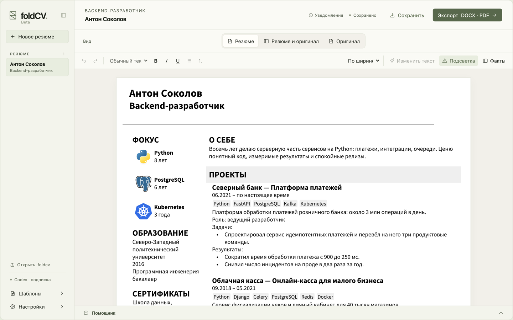
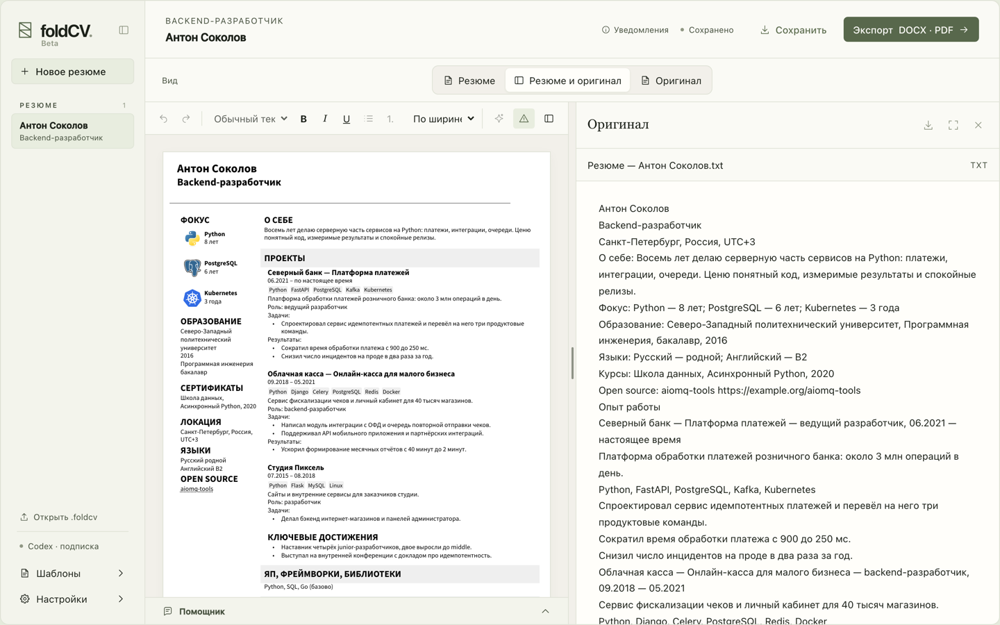

Редактор резюме, который работает на вашем компьютере
FoldCV берёт резюме в PDF, DOCX, TXT или Markdown, вытаскивает из него факты — опыт, технологии, образование — и раскладывает их по шаблону. Результат можно править в редакторе и выгрузить в DOCX или PDF.
Текст разбирает и переписывает модель — Codex или Claude. Для этого нужна подписка ChatGPT или Claude: FoldCV сам устанавливает Codex CLI или Claude Code и проводит вход. Своего сервера у FoldCV нет, ключи API не нужны. Проекты хранятся на диске. Текст резюме уходит только в выбранную модель, и только когда вы запускаете импорт, переписывание или помощника.

Что умеет
- Импорт из PDF, DOCX, TXT и Markdown.
- Факты отдельно от текста: имя, опыт, технологии, образование. Правите факт в панели — документ обновляется.
- Переписывание текста с предпросмотром: видно, что было и что станет. Без кнопки «Применить» ничего не меняется.
- Помощник: чат, который читает проект и предлагает правки. Они тоже применяются только после подтверждения.
- Пять шаблонов: две колонки, одна колонка, таблица навыков, анкета и карточки проектов. Можно добавить свой логотип и подвал.
- Экспорт в DOCX и в PDF через системное окно печати.

Скачать
Сборки не подписаны, поэтому система один раз спросит, запускать ли приложение.
- macOS
- Apple Silicon, macOS 12 или новее с Safari 17.4 или новее: интерфейс показывает системный WebKit. На Intel не работает. При первом запуске разрешите приложение в «Системные настройки → Конфиденциальность и безопасность».
- Windows
- Windows 10 или новее, нужен WebView2 (в Windows 11 он уже есть). Распакуйте архив в любую папку и запустите foldCV.exe. Установщика нет. SmartScreen спросит один раз: «Подробнее» → «Выполнить в любом случае».
Версия v1.0.0 от 12 ноября 2026 г. Все сборки и заметки к ним — на странице релизов.
Исходный код
Код открыт: github.com/aimmlegate/foldCV, лицензия AGPL-3.0. Как собрать и запустить из исходников, написано в README.